Now that we have lights, we want shadows. The back of the objects are indeed in the dark, and this is called the core shadow. What we are missing is the drop shadow, where objects create shadows on the other objects.
Shadows have always been a challenge for real-time 3D rendering, and developers must find tricks to display realistic shadows at a reasonable frame rate.
There are many ways of implementing them, and Three.js has a built-in solution. Be aware, this solution is convenient, but it's far from perfect.
We won't detail how shadows are working internally, but we will try to understand the basics.
When you do one render, Three.js will first do a render for each light supposed to cast shadows. Those renders will simulate what the light sees as if it was a camera. During these lights renders, MeshDepthMaterial replaces all meshes materials.
The results are stored as textures and named shadow maps.
You won't see those shadow maps directly, but they are used on every material supposed to receive shadows and projected on the geometry.
Here's an excellent example of what the directional light and the spotlight see: https://threejs.org/examples/webgl_shadowmap_viewer.html
Our starter is composed of one simple sphere on a plane with one directional light and one ambient light.
You can control these lights and the material metalness and roughness in Dat.GUI.
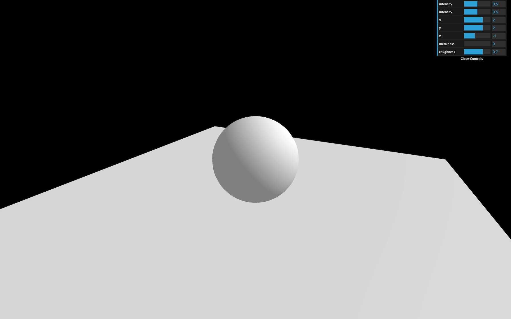
First, we need to activate the shadow maps on the renderer:
Then, we need to go through each object of the scene and decide if the object can cast a shadow with the castShadow property, and if the object can receive shadow with the receiveShadow property.
Try to activate these on as few objects as possible:
Finally, activate the shadows on the light with the castShadow property.
Only the following types of lights support shadows:
And again, try to activate shadows on as few lights as possible:
You should get a shadow of the sphere on the plane.
Sadly, that shadow looks terrible. Let's try to improve it.
As we said at the start of the lesson, Three.js is doing renders called shadow maps for each light. You can access this shadow map (and many other things) using the shadow property on the light:
As for our render, we need to specify a size. By default, the shadow map size is only 512x512 for performance reasons. We can improve it but keep in mind that you need a power of 2 value for the mipmapping:
The shadow should already look better.
Three.js is using cameras to do the shadow maps renders. Those cameras have the same properties as the cameras we already used. This means that we must define a near and a far. It won't really improve the shadow's quality, but it might fix bugs where you can't see the shadow or where the shadow appears suddenly cropped.
To help us debug the camera and preview the near and far, we can use a CameraHelper with the camera used for the shadow map located in the directionalLight.shadow.camera property:
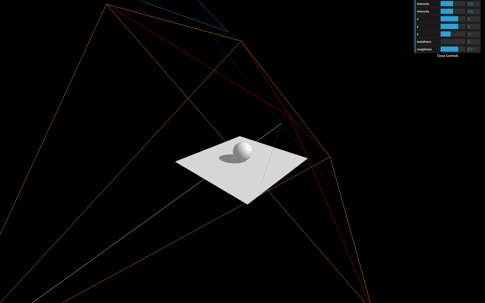
Now you can visually see the near and far of the camera. Try to find a value that fits the scene:
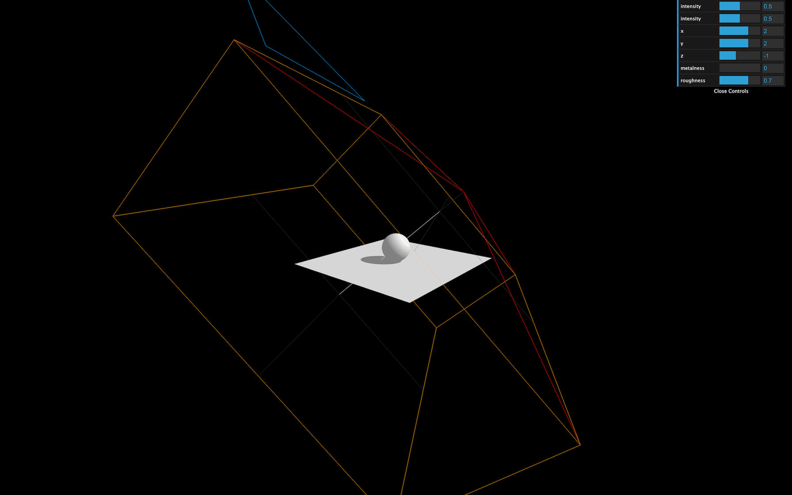
With the camera helper we just added, we can see that the camera's amplitude is too large.
Because we are using a DirectionalLight, Three.js is using an OrthographicCamera. If you remember from the Cameras lesson, we can control how far on each side the camera can see with the top, right, bottom, and left properties. Let's reduce those properties:
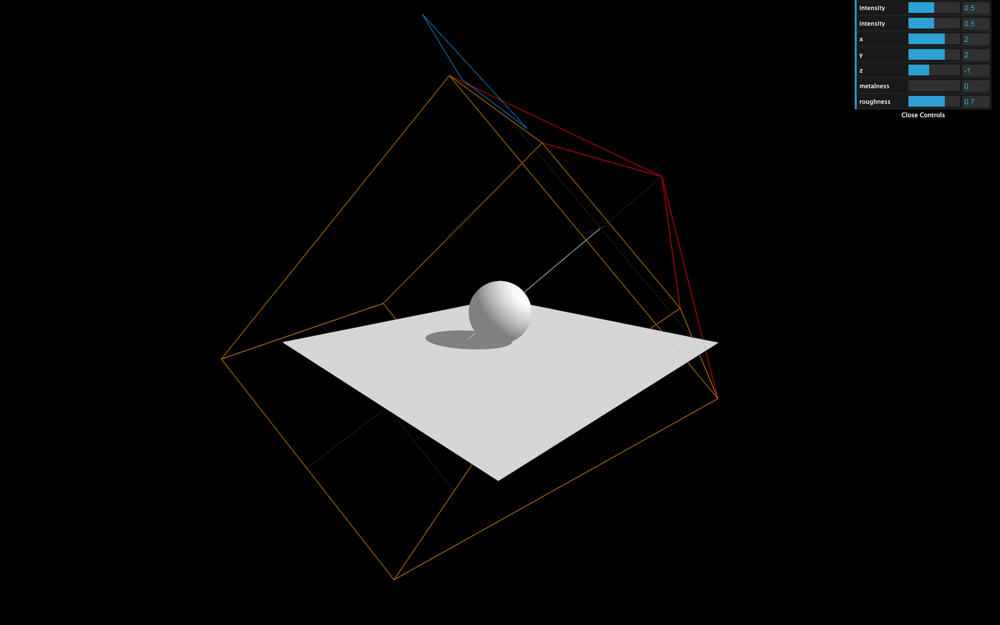
The smaller the values, the more precise the shadow will be. But if it's too small, the shadows will just be cropped.
You can hide the camera helper once you're done:
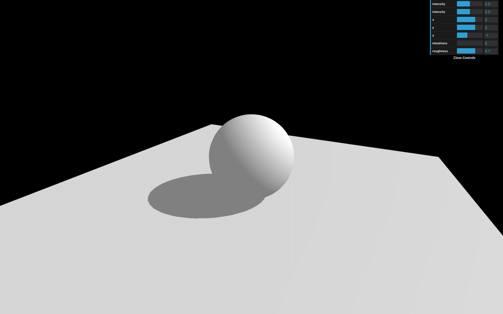
You can control the shadow blur with the radius property:
This technique doesn't use the proximity of the camera with the object. It's just a general and cheap blur.
Different types of algorithms can be applied to shadow maps:
To change it, update the renderer.shadowMap.type property. The default is THREE.PCFShadowMap but you can use THREE.PCFSoftShadowMap for better quality.
Be aware that the radius property doesn't work with THREE.PCFSoftShadowMap. You'll have to choose.
Let's try to add a SpotLight like we did in the Lights lesson and add the castShadow property to true. Don't forget to add the target property to the scene.
We will also add a camera helper:
You can reduce the other lights intensity if the scene is too bright:
As you can see, shadows don't merge nicely. They are handled independently, and, unfortunately, there is not much to do about it.
But we can improve the shadow quality using the same techniques that we used for the directional light.
Change the shadow.mapSize:
Because we are now using a SpotLight, internally, Three.js is using a PerspectiveCamera. That means that instead of the top, right, bottom, and left properties, we must change the fov property. Try to find an angle as small as possible without having the shadows cropped:
Change the near and far values:
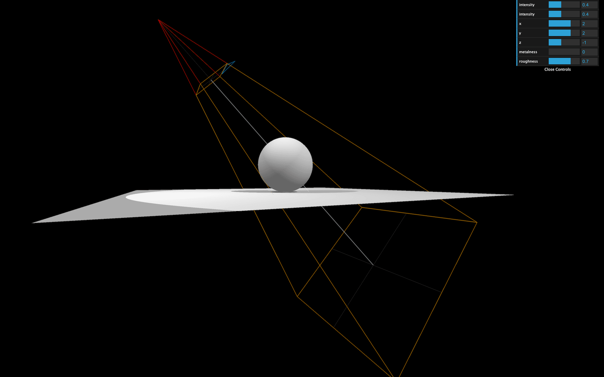
You can hide the camera helper once you're done:
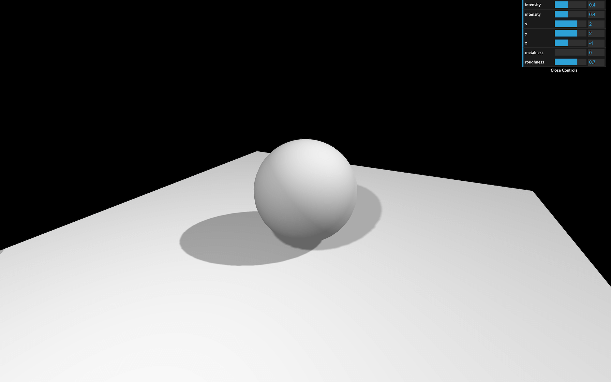
Let's try the last light supporting shadows, the PointLight:
You can reduce the other lights intensity if the scene is too bright:
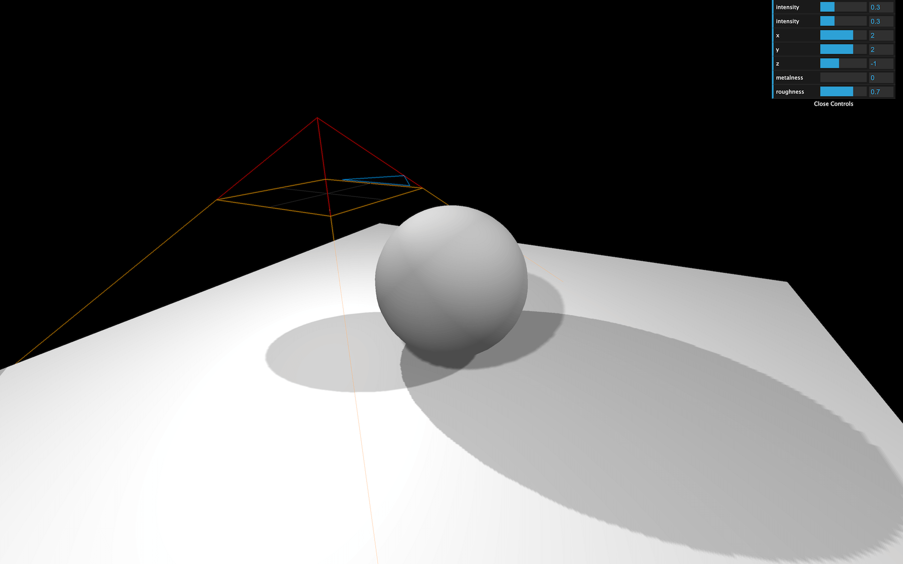
As you can see, the camera helper is a PerspectiveCamera (like for the SpotLight) but facing downward. That is due to how Three.js handles shadow maps for the PointLight.
Because the point light illuminates in every direction, Three.js will have to render each of the 6 directions to create a cube shadow map. The camera helper you see is the camera's position in the last of those 6 renders (which is downward).
Doing all those renders can generate performance issues. Try to avoid having too much PointLight with shadows enabled.
The only properties you can tweak here are the mapSize, near and far:
You can hide the camera helper once you're done:
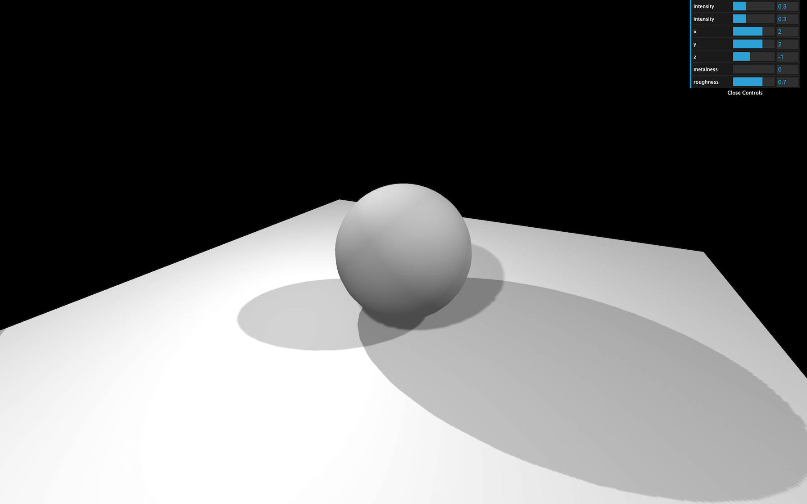
Three.js shadows can be very useful if the scene is simple, but it might otherwise become messy.
A good alternative is baked shadows. We talk about baked lights in the previous lesson and it is exactly the same thing. Shadows are integrated into textures that we apply on materials.
Instead of commenting all the shadows related lines of code, we can simply deactivate them in the renderer:
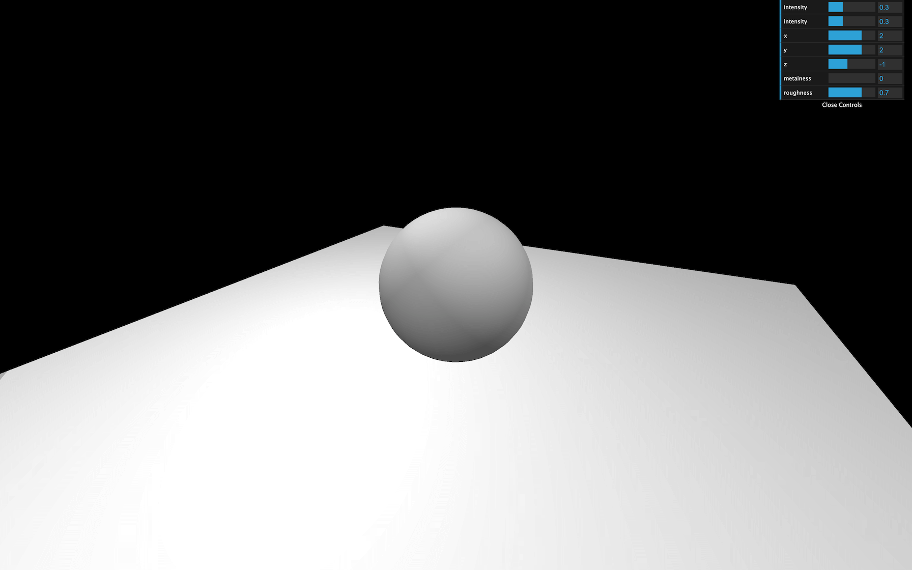
Now we can load a shadow texture located in /static/textures/bakedShadow.jpg using the classic TextureLoader.
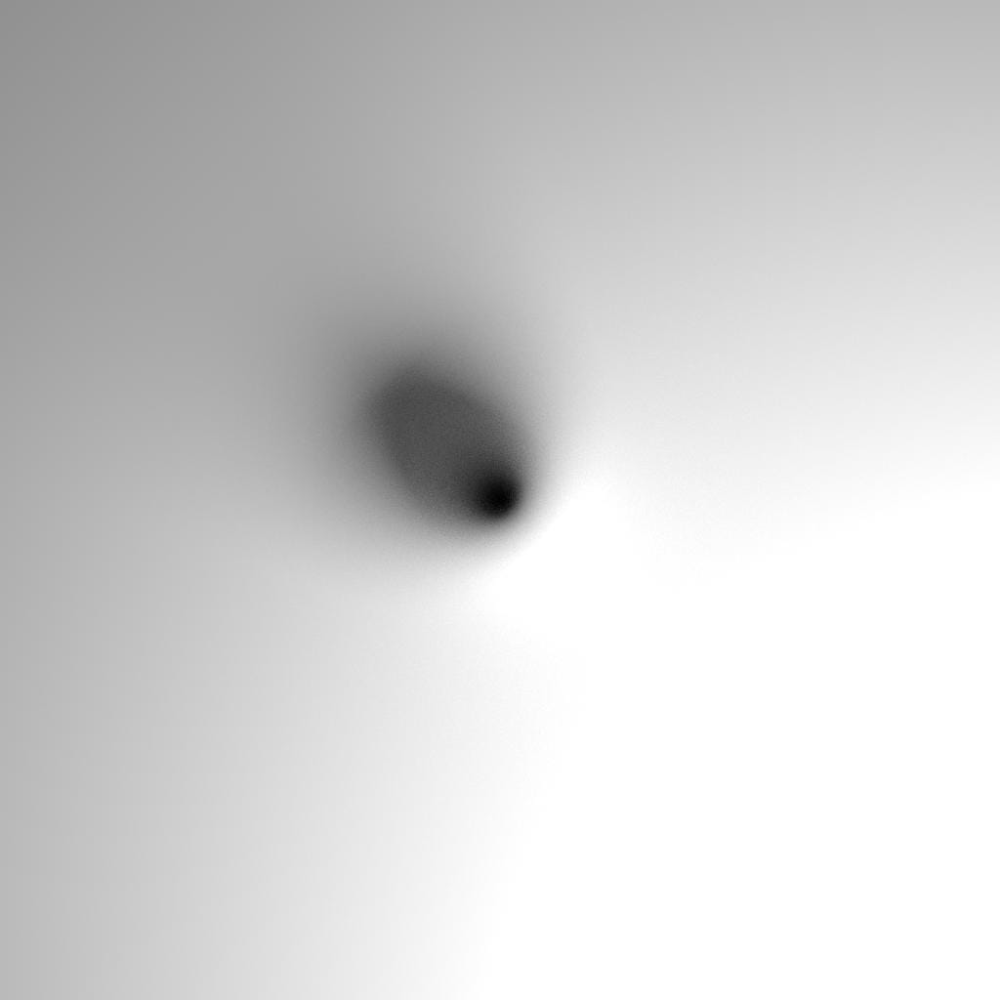
Add the following code before creating the objects and lights:
And finally, instead of using a MeshStandardMaterial on the plane, we'll use a simple MeshBasicMaterial with the bakedShadow as map:
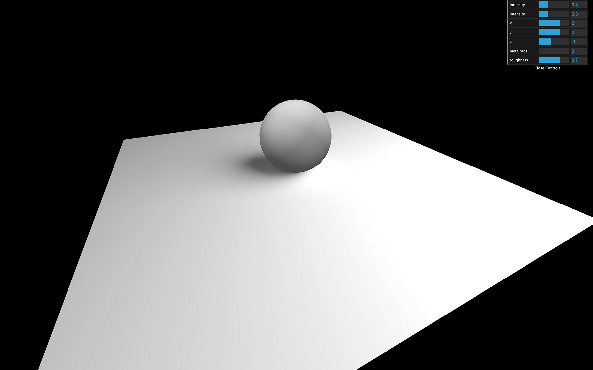
You should see a nice blurred, and realistic fake shadow. The main problem is that it's not dynamic, and if the sphere or the lights moves, the shadows won't.
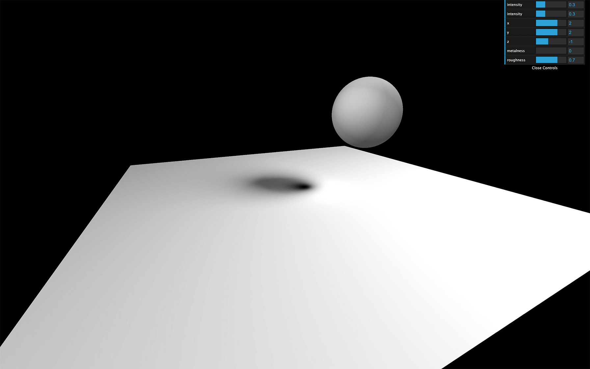
A less realistic but more dynamic solution would be to use a more simple shadow under the sphere and slightly above the plane.
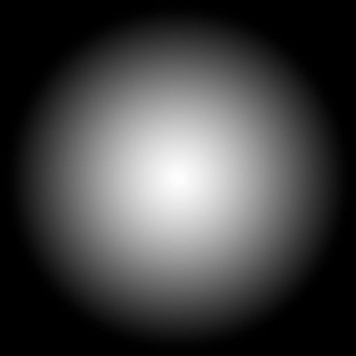
The texture is a simple halo. The white part will be visible and the black part will be invisible.
Then, we move that shadow with the sphere.
First, let's remove the previous baked shadow by putting back the MeshStandardMaterial on the plane:
Then, we can load a basic shadow texture located in /static/textures/bakedShadow.jpg.
We can create the shadow by using a simple plane that we rotate and place slightly above the floor. The material must be black but with the shadow texture as the alphaMap. Don't forget to change transparent to true, and to add the mesh to the scene:
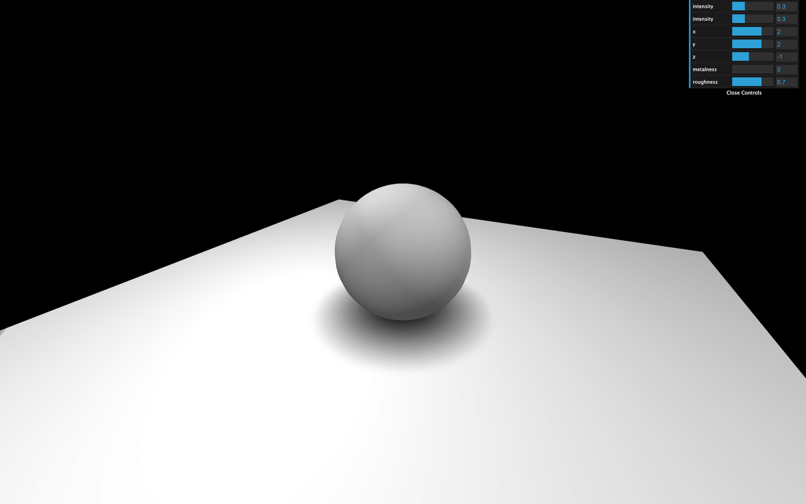
There you go, a not so realistic but very performant shadow.
If you're going to animate the sphere, you can simply animate the shadow accordingly and change its opacity depending on the elevation of the sphere:
Finding the right solution to handle shadows is up to you. It depends on the project, the performances and the techniques you know. You can also combine them.